<title>Montado: 4, 6 y 7</title>
<meta name="claude:viewport-fit-sides" content="cover">
<link rel="stylesheet" href="https://fonts.googleapis.com/css2?family=EB+Garamond:ital,wght@1,500&family=Inter+Tight:wght@400;500;600&display=swap">
<style>
  /* Una columna de lectura, como la página de las letras: por cada letra, qué cambia y luego antes / después,
     el móvil (360 × 740) y el ordenador (1536 × 710). La paleta y las letras son las de PACE. */
  :root {
    --paper: #F2EDE0; --paper-2: #EAE4D4; --ink: #1F1C17; --ink-2: #4A453C; --ink-3: #6E675A;
    --line: #C9C0A8; --focus: #3E5A3A; --focus-soft: rgba(62, 90, 58, 0.10); --terra: #A85A3E;
    --font-display: 'EB Garamond', 'Cormorant Garamond', Georgia, serif;
    --font-ui: 'Inter Tight', system-ui, -apple-system, sans-serif;
  }
  @media (prefers-color-scheme: dark) { :root:not([data-theme="light"]) {
    --paper: #1d1a14; --paper-2: #26211a; --ink: #EDE5D3; --ink-2: #c0b49e; --ink-3: #B2A995;
    --line: #4d4536; --focus: #98B58B; --focus-soft: rgba(122, 154, 109, 0.14); --terra: #D99477; color-scheme: dark } }
  :root[data-theme="dark"] {
    --paper: #1d1a14; --paper-2: #26211a; --ink: #EDE5D3; --ink-2: #c0b49e; --ink-3: #B2A995;
    --line: #4d4536; --focus: #98B58B; --focus-soft: rgba(122, 154, 109, 0.14); --terra: #D99477; color-scheme: dark }
  body { background: var(--paper); color: var(--ink); font-family: var(--font-ui); font-size: 16px; line-height: 1.55;
    padding-left: max(16px, env(safe-area-inset-left, 0px)); padding-right: max(16px, env(safe-area-inset-right, 0px)); padding-block: 40px 64px; }
  main { max-width: 1040px; margin: 0 auto; display: grid; gap: 52px; }
  h1, h2 { font-family: var(--font-display); font-style: italic; font-weight: 500; margin: 0; text-wrap: balance; line-height: 1.1; }
  h1 { font-size: clamp(34px, 6vw, 48px); }
  h2 { font-size: clamp(26px, 4.4vw, 34px); }
  p, ul { margin: 0; max-width: 66ch; }
  ul { padding-left: 20px; display: grid; gap: 6px; }
  .eyebrow { font-size: 12px; letter-spacing: 0.1em; text-transform: uppercase; color: var(--ink-3); font-weight: 500; }
  header, section { display: grid; gap: 18px; }
  section { border-top: 1px solid var(--line); padding-top: 30px; }
  .letra { display: inline-block; font-family: var(--font-ui); font-style: normal; font-size: 13px; font-weight: 600;
    color: var(--focus); background: var(--focus-soft); border-radius: 999px; padding: 2px 10px; vertical-align: middle; margin-left: 6px; }
  .dos { display: grid; grid-template-columns: repeat(auto-fit, minmax(min(100%, 300px), 1fr)); gap: 18px; }
  .antes-despues { display: grid; grid-template-columns: 1fr 1fr; gap: 14px; align-items: start; }
  figure { margin: 0; display: grid; gap: 6px; min-width: 0; }
  figure img { display: block; width: 100%; height: auto; border-radius: 10px; border: 1px solid var(--line); }
  figcaption { font-size: 13px; color: var(--ink-3); }
  figcaption b { color: var(--ink-2); font-weight: 600; }
  .movil { max-width: 560px; }
  .cuadro { background: var(--paper-2); border-radius: 12px; padding: 18px 20px; display: grid; gap: 10px; }
  .cuadro h2 { font-size: 26px; }
  @media (max-width: 420px) { .antes-despues { gap: 8px; } }
</style>

<main>
  <header>
    <div class="eyebrow">Revisión de ChatGPT · 11 nov. 2026</div>
    <h1>Montado: 4, 6 y 7</h1>
    <p>Las tres letras que elegiste ya están en la app, tal como se pintaron: <b>4 B</b>, <b>6 A</b> y <b>7 A</b>.
      Esperan tu «júntalo» en la rama de la revisión. En cada foto, a la izquierda cómo estaba y a la derecha cómo queda.</p>
  </header>

  <section>
    <div class="eyebrow">Punto 4</div>
    <h2>«Cambiar» con un Foco en marcha <span class="letra">B</span></h2>
    <p>Empiezas la jornada a las 9:00 con un bloque de 45 min y a las 9:10 cambias a «Una hora».</p>
    <ul>
      <li><b>Antes:</b> el día nuevo creía que el bloque empezaba a las 9:10 y duraba 25, así que ponía la pausa a las 9:35, cuando aún te quedaban 10 min de bloque.</li>
      <li><b>Ahora:</b> el bloque que corre es el primero del día nuevo, con su hora y lo que dura. «Una hora» va de 9:00 a 9:50 y la pausa sale a las 9:45, al acabar el bloque. No sale ninguna ventana y no se pierde nada.</li>
    </ul>
    <div class="antes-despues movil">
      <figure>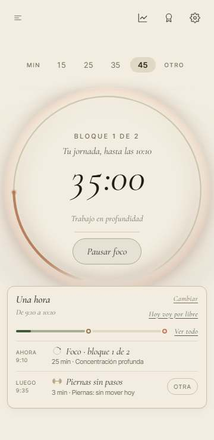<figcaption><b>Antes</b> · móvil</figcaption></figure>
      <figure>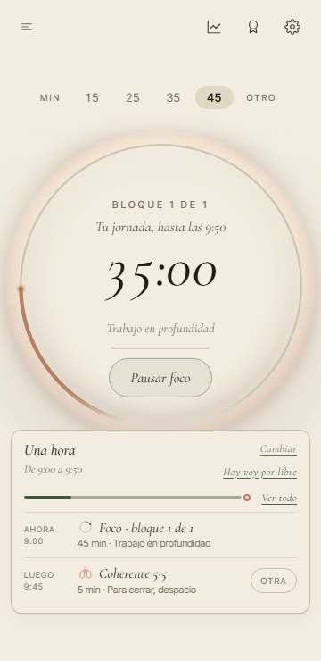<figcaption><b>Ahora</b> · móvil</figcaption></figure>
    </div>
    <div class="dos">
      <figure>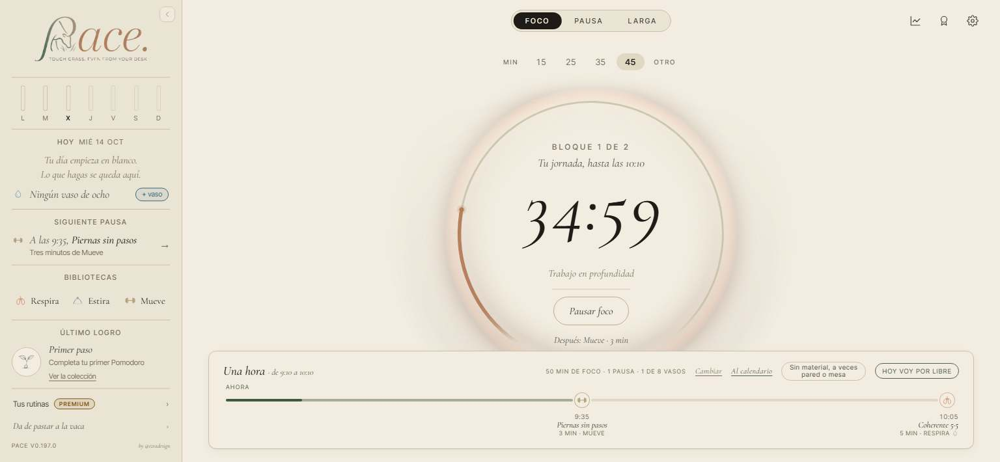<figcaption><b>Antes</b> · ordenador</figcaption></figure>
      <figure>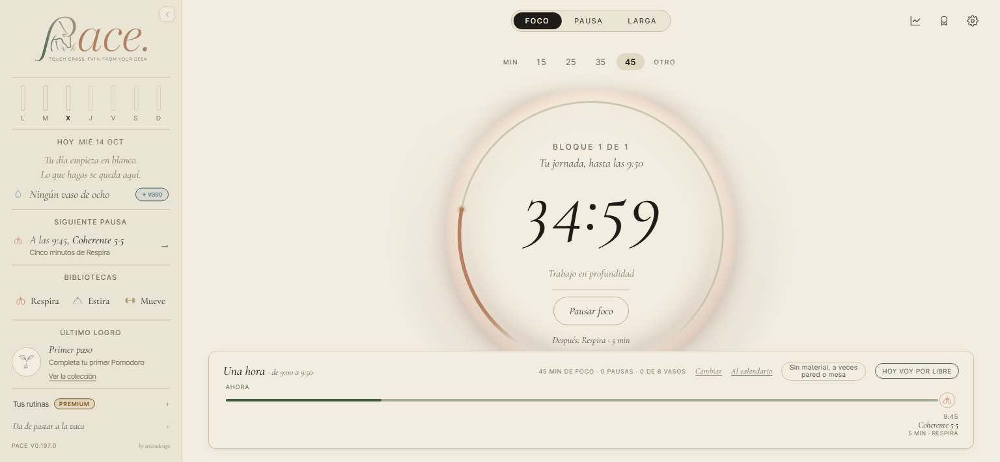<figcaption><b>Ahora</b> · ordenador</figcaption></figure>
    </div>
  </section>

  <section>
    <div class="eyebrow">Punto 6</div>
    <h2>Lo hecho por tu cuenta, en Estadísticas › Hoy <span class="letra">A</span></h2>
    <p>Con la jornada elegida haces 2 min de Box 4·4·4·4 y 4 min de Cuello suave fuera de las pausas.</p>
    <ul>
      <li><b>Antes:</b> los totales de arriba los contaban, pero abajo solo salían las paradas del plan.</li>
      <li><b>Ahora:</b> debajo de las paradas, un título pequeño, «Además, por tu cuenta», y esas sesiones con la misma tarjeta, por hora. Si no hiciste nada aparte, no sale.</li>
      <li>Una rutina hecha dentro de una pausa sale en su parada y no se repite abajo, aunque otra igual la hagas suelta.</li>
    </ul>
    <div class="antes-despues movil">
      <figure>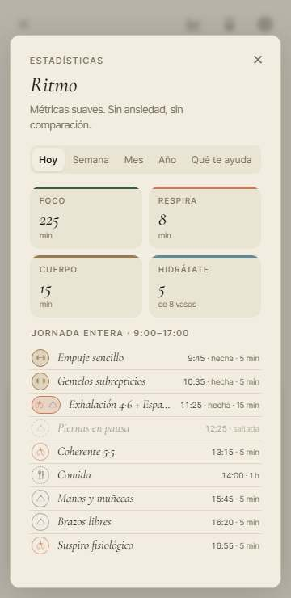<figcaption><b>Antes</b> · móvil</figcaption></figure>
      <figure>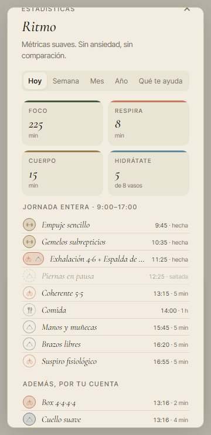<figcaption><b>Ahora</b> · móvil</figcaption></figure>
    </div>
    <div class="dos">
      <figure>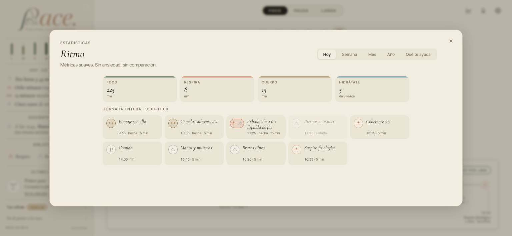<figcaption><b>Antes</b> · ordenador</figcaption></figure>
      <figure>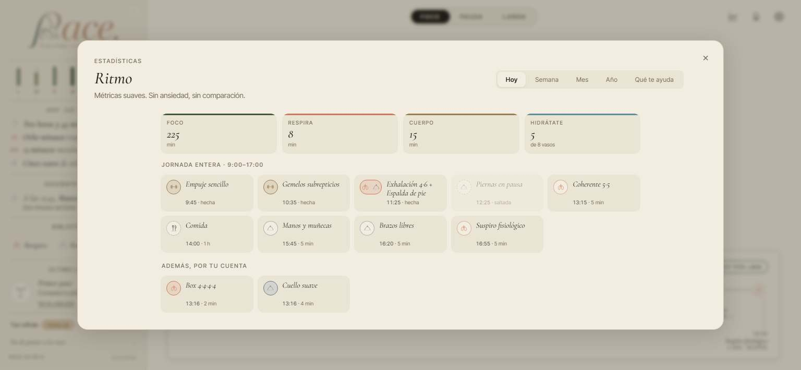<figcaption><b>Ahora</b> · ordenador</figcaption></figure>
    </div>
  </section>

  <section>
    <div class="eyebrow">Punto 7</div>
    <h2>Cuántos minutos dice una pausa hecha <span class="letra">A</span></h2>
    <p>La pausa de las 13:15 tiene 5 min en el plan y en ella haces una rutina de 2.</p>
    <ul>
      <li><b>Antes:</b> una pausa hecha decía los minutos del plan, «hecha · 5 min». Y la de ahora, ya hecha, decía «ahora».</li>
      <li><b>Ahora:</b> dice lo que hiciste, «hecha · 2 min». La de ahora, si ya la hiciste, también lo dice, y sigue marcada como la de ahora.</li>
      <li>Lo mismo en la línea del día y en la lista de la jornada entera.</li>
    </ul>
    <div class="antes-despues movil">
      <figure>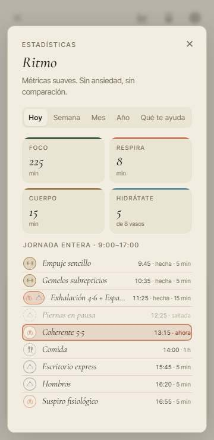<figcaption><b>Antes</b> · móvil</figcaption></figure>
      <figure>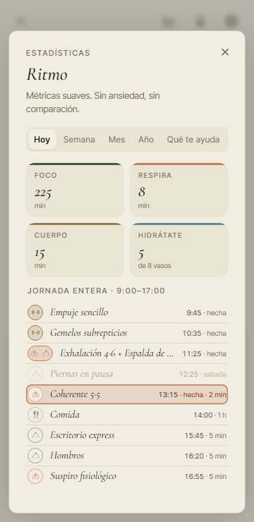<figcaption><b>Ahora</b> · móvil</figcaption></figure>
    </div>
    <div class="dos">
      <figure>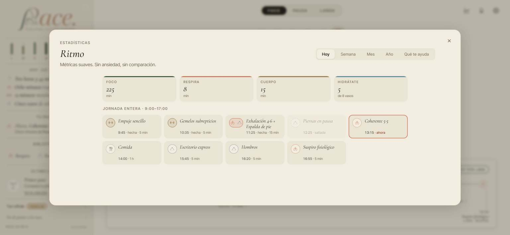<figcaption><b>Antes</b> · ordenador</figcaption></figure>
      <figure><figcaption><b>Ahora</b> · ordenador</figcaption></figure>
    </div>
  </section>

  <section>
    <div class="cuadro">
      <h2>Lo que conviene que sepas</h2>
      <ul>
        <li>Las pausas que hiciste <b>antes de esta versión</b> dicen solo «hecha», sin minutos: hasta ahora la app no apuntaba qué rutina hiciste en cada pausa. Desde que la juntes, ya lo apunta.</li>
        <li>Por lo mismo, el día que la juntes, lo que hubieras hecho esa mañana dentro de una pausa puede salir también en «Además, por tu cuenta». Solo pasa ese día.</li>
        <li>Nada tapa nada: medido en el móvil a 360 × 740 y en el ordenador a 1536 × 710 y a 1920 × 860, la pantalla de inicio sigue sin scroll.</li>
      </ul>
    </div>
  </section>
</main>
